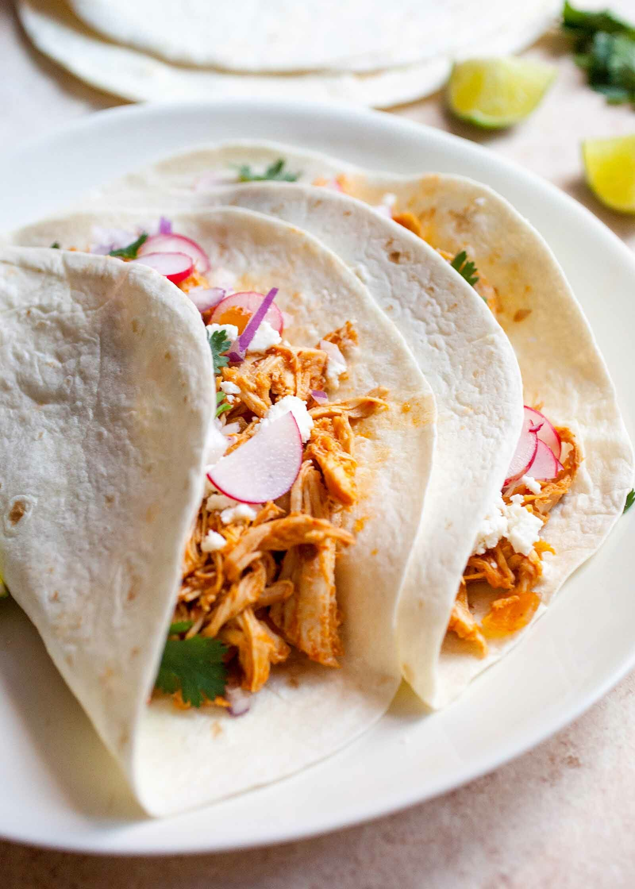

Tacos de Pollo al Chipotle
Lleva tus tacos al siguiente nivel con este delicioso pollo marinado en salsa de chipotle. Cada bocado es una aventura de sabores, desde el pollo jugoso hasta la cremosidad del aguacate y la frescura de la crema agria. ¡Una receta que cautivará a tu paladar!

Ingredientes:
500 gramos de pechugas de pollo deshuesadas y sin piel, cortadas en tiras
1 lata de chiles chipotles adobados (puedes ajustar la cantidad según tu nivel de picante deseado)
1 cucharada de aceite de oliva
1 cebolla mediana, picada finamente
2 dientes de ajo, picados
Sal y pimienta al gusto
Tortillas de maíz o harina para servir
Pasos:
1.En un procesador de alimentos o licuadora, mezcla los chiles chipotles adobados con una pequeña cantidad de agua para formar una pasta de chipotle. Reserva.
2.Calienta el aceite de oliva en una sartén grande a fuego medio. Agrega la cebolla picada y el ajo picado, y saltea hasta que estén dorados y fragantes.
3.Agrega las tiras de pollo a la sartén y cocina hasta que estén doradas y bien cocidas.
4.Agrega la pasta de chipotle y el comino en polvo al pollo. Mezcla bien para que el pollo quede bien cubierto con el adobo de chipotle. Cocina por unos minutos para que los sabores se mezclen.
5.Ajusta el sazón con sal y pimienta al gusto.
6.Calienta las tortillas en una sartén o en el microondas.
7.Sirve las tiras de pollo al chipotle en las tortillas calientes.
8.Acompaña los tacos con lechuga, tomate, aguacate en rodajas, crema agria o crema de leche y queso rallado.
9.Si deseas, exprime un poco de limón sobre los tacos para darles un toque de frescura.